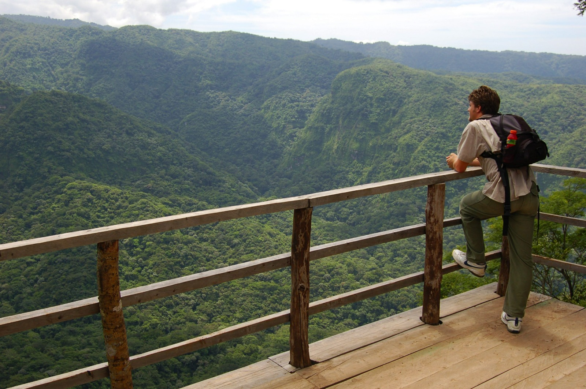
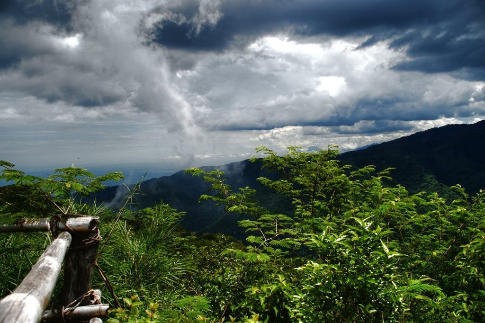

El Parque Nacional El Imposible es una de las áreas naturales protegidas más importantes de El Salvador. Se encuentra en el departamento de Ahuachapán y forma parte de la cordillera Apaneca–Ilamatepec.
Su nombre proviene de un antiguo paso montañoso que en el pasado era considerado muy difícil de cruzar por las caravanas que transportaban café hacia la costa.
Actualmente el parque protege extensas áreas de bosque tropical y es un destino ideal para caminatas, observación de aves y disfrutar de la naturaleza.

